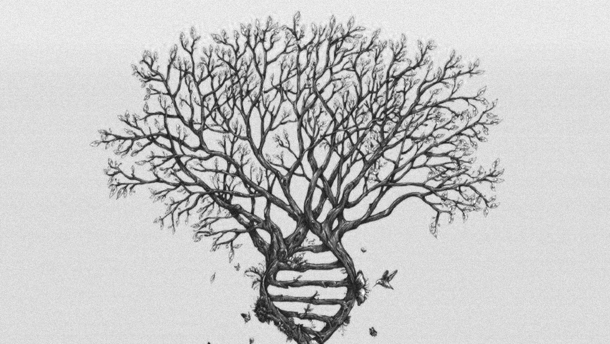

Desbloqueando situaciones de estrés.
Cada experiencia que vivimos está codificada en nuestras células. Estas memorias afectan nuestra vida presente, a tal punto que nos predispone a percibir y a comportarnos de una forma predeterminada, ligada a nuestro pasado. Nuestras células guardan en un archivo todas las memorias relacionadas con un hecho asociado a la forma en que fue resuelto, y si el resultado fue doloroso o no. Cuando estamos bajo estrés, respondemos a las situaciones con los patrones que nos han permitido sobrevivir tanto a nosotros como a los miembros de nuestra familia.
Estos patrones propios y transgeneracionales están grabados en la memoria de nuestras células y hacen que respondamos en forma automática para asegurarnos la supervivencia física o emocional. Si esto funcionó en el pasado, seguro volverá a salvarnos esta vez. Estos mecanismos psicoenergéticos bloquean nuevas respuestas creativas, ya que bajo estrés lo nuevo se vive como una amenaza y nuestro sistema de creencias se aferra a lo conocido, aunque sea improductivo.
La decodificación de la memoria celular es una valiosa herramienta que nos permite acceder al archivo de nuestras memorias inconscientes, descubrir cuáles son los mecanismos que repetimos y liberar el estrés acumulado. Nos permite trabajar nuestras limitaciones y bloqueos, ya sean miedos, fobias, compulsiones, síntomas físicos, relaciones interpersonales, y/o dificultad para manifestarnos en las distintas áreas de nuestra vida. Esto nos habilita a recuperar la posibilidad de responder en forma renovada y consciente a los desafíos que se nos presentan, y expresar nuestro potencial creativo, dones y talentos para transformar nuestro presente, y también ofrecerlos para la creación de una nueva sociedad.